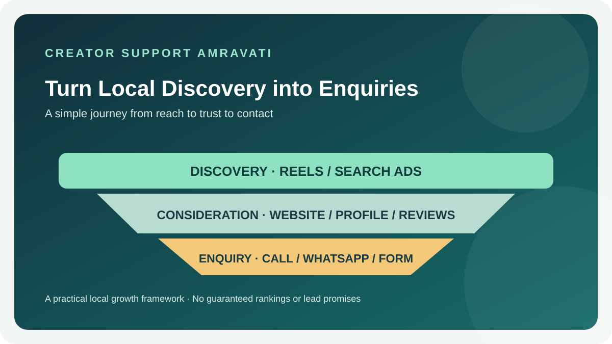
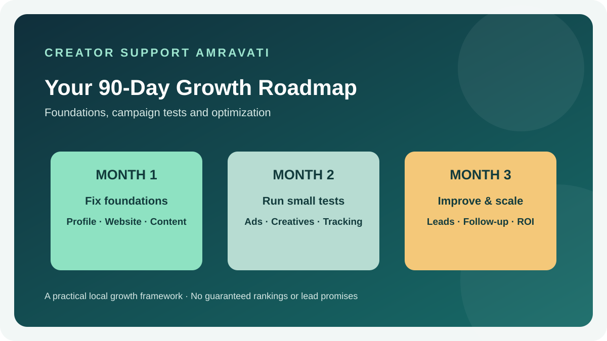

1. Organic content vs. paid ads: how each channel works
Organic marketing is the useful content and business information people can discover without paying for each impression or click. It includes search-friendly website pages, Local SEO, a well-maintained Google Business Profile, Instagram Reels, YouTube videos, customer education and community engagement. It still takes real investment: planning, production, publishing, responding and updating.
Paid advertising buys distribution through platforms such as Google Ads and Meta Ads. It can create visibility quickly, but impressions are not the same as customers. Performance depends on the offer, audience, creative, competition, landing page, tracking and follow-up—not budget alone.
| Factor | Organic content | Paid ads |
|---|---|---|
| Speed | Usually gradual; useful pages and content may build visibility over time | Can generate reach and clicks soon after approval and launch |
| Investment | Time, creative production, expertise and ongoing maintenance | Media spend plus creative, setup, tracking and campaign management |
| Trust | Helpful answers, proof of work and genuine reviews can build familiarity | Sponsored placements are clearly ads; the destination must earn confidence |
| Longevity | Useful content can continue to be discovered, though rankings and reach can change | Delivery generally reduces or stops when the campaign is paused |
| Best role | Authority, education, local discoverability and long-term demand | Promotions, launches, time-sensitive offers and capturing active demand |
| Main risk | Expecting instant results or publishing without a clear audience need | Paying for low-quality clicks or leads without a conversion process |
There is no universal winner. A clinic may need Google Search visibility for high-intent queries, while a new coaching batch may benefit from short videos and a time-bound Meta campaign. A retail shop may combine product updates, Maps information and seasonal promotions. Start with how customers discover and evaluate your category.
2. Why paid ads need an organic foundation
People rarely judge an unfamiliar business from one advertisement alone. They may open its Instagram profile, check its Maps listing, read reviews, compare services or visit the website before contacting it. If these destinations are incomplete or inconsistent, the campaign has to overcome avoidable doubt.
- Credible social profile: Publish a useful set of current posts that explain services, show the real team or workspace, answer common questions and demonstrate work with permission. There is no magic requirement to reach exactly 9 or 12 posts; quality and relevance matter more than a fixed count.
- Accurate Google Business Profile: Keep the real business name, eligible address or service area, hours, phone, categories, services and photos current. Ask customers for honest reviews without incentives or pressure.
- Fast, relevant destination: Send ad traffic to a page that matches the ad promise. Make the phone, WhatsApp or enquiry form easy to use on a mobile device.
- Proof and policies: Explain who provides the service, what is included, service limitations, pricing approach where appropriate, privacy practices and how customers can contact you.
- Lead response process: Decide who checks calls, messages and forms, when they respond and how follow-ups are recorded.
3. Choose the right ad channel for your local goal

Google Search: capture existing intent
Search campaigns can be useful when people already know what they need and actively search for a provider—for example, a dental clinic, competitive exam coaching class or video production studio in a particular area. Build tightly relevant ad groups, use location settings carefully, write clear ad copy and send clicks to a matching service page. Review actual search terms and add irrelevant terms as negatives where appropriate.
Meta Ads: create awareness and consideration
Instagram and Facebook campaigns can introduce a business, demonstrate a service, promote an event or workshop, and help people remember a local brand. Use real, clear creative; identify the audience and geography; state the offer and next step; and make sure the landing destination answers likely questions. Do not assume every video view is purchase intent.
Organic discovery: make the brand useful between campaigns
Reels, YouTube explainers, website articles and Google Business Profile updates can answer recurring questions and show how the business works. Use the format that suits the topic. A 30-second demonstration may work as a Reel; a detailed comparison may deserve a website guide or longer video. For a deeper content workflow, see our Instagram Reels strategy guide and Local SEO and Google Business Profile guide.
Creative principle: show a real customer problem, explain the service honestly, use readable captions and offer one clear next action. Authenticity is not a performance guarantee; test different messages and formats with your own audience and conversion data.
4. A practical 90-day digital marketing plan

Month 1: fix foundations and local visibility
- Review business goals, best-fit customers, service area, margins and the most important service or offer.
- Complete the Google Business Profile accurately and check that the website name, address, phone and opening hours are consistent where applicable.
- Improve the relevant website landing page: service details, genuine photos, FAQs, contact options, mobile usability and privacy information.
- Plan a sustainable content calendar. For example, publish two or three helpful short videos each week if the team can maintain that quality; add website articles when there is a substantial question worth answering. Frequency is a planning choice, not a ranking guarantee.
- Set up basic measurement: call and form tracking where technically and legally appropriate, UTM campaign tags, a lead sheet or CRM, and a clear definition of a qualified enquiry.
Month 2: launch small, focused campaign tests
- Choose one business objective and one priority service or offer. Avoid splitting a small budget across too many audiences and campaigns.
- Test a limited number of creative approaches—such as a founder explanation, service demonstration and customer problem/solution—subject to permissions and platform policies.
- For Search, review the actual queries and geographic relevance. For Meta, check whether the creative attracts the intended local audience and whether the resulting leads are relevant.
- Record spend, enquiries, qualified leads, appointments or visits, and sales where you can reliably attribute them.
- Continue organic publishing and respond to comments and messages. Ads should not replace basic customer service.
Month 3: improve and scale cautiously
- Compare campaigns using cost per qualified enquiry and downstream outcomes, not just reach, likes or cost per click.
- Pause or revise ads that spend without producing relevant outcomes. Check the landing page, offer, audience, search terms and response process before deciding why.
- Put additional budget only behind campaigns that show repeatable business value and can be handled by your team.
- Repurpose proven organic topics into paid creative, while respecting content rights, customer permissions and platform rules.
- Ask customers for honest feedback and reviews without rewards, selective review requests or pressure.
5. Set a sensible test budget
There is no one correct monthly ad budget for every local brand. It depends on service value, gross margin, sales cycle, competition, geographic reach, lead-handling capacity and how much uncertainty the business can afford while learning.
Choose an amount that the business can spend for a defined test period—often two to four weeks—without relying on an immediate return to pay essential expenses. Decide the maximum test spend in advance, keep the scope narrow and review results at planned intervals. Do not increase spend simply because impressions or clicks are rising.
Before launch, write down: (1) the campaign objective, (2) the offer and audience, (3) the test period and spend limit, (4) what counts as a qualified lead, and (5) the decision rule for continuing, changing or stopping. Platform budgets are not promises of a particular number of leads or sales.
6. Measure enquiries and business outcomes—not vanity metrics
Reach, impressions, views, likes and clicks help explain delivery and engagement. They do not, by themselves, prove business growth. Track the complete path as far as your systems allow:
| Metric | What it tells you | How to use it |
|---|---|---|
| Qualified enquiries | People who fit your service and location | Review quality, not only volume |
| Cost per qualified enquiry | Spend divided by qualified enquiries | Compare similar campaigns and periods |
| Appointment / visit rate | How many enquiries move to the next step | Check offer clarity and response quality |
| Customer acquisition cost | Marketing and sales cost per acquired customer | Compare with contribution margin and customer value |
| Revenue and repeat business | Commercial outcomes beyond the first click | Use reliable records and attribution caveats |
Keep a simple lead record: date, source, campaign or content, service requested, location, status, follow-up date and outcome. Collect only information you need, restrict access and follow applicable privacy requirements. Attribution is imperfect—people may see a Reel, later search the brand and then call—so combine platform reports with real enquiry records.
7. Do not lose leads after they enquire
Fast, helpful follow-up can make a meaningful difference, but avoid promising that a fixed response time guarantees a sale. Publish realistic business hours and set a process your team can maintain.
- Acknowledge enquiries politely during stated working hours and tell the customer what happens next.
- Ask only the details needed to understand the requirement and service fit.
- Assign an owner to every open lead and schedule a sensible follow-up.
- Use saved replies for common questions, but personalize important details and avoid spam.
- Mark outcomes—won, lost, not qualified or no response—so future marketing decisions use real evidence.
8. Common local marketing mistakes to avoid
- Boosting random posts without a defined objective, audience, destination or measurement plan.
- Sending every ad to the homepage instead of the relevant service or offer page.
- Targeting an unrealistically large area when the business can serve only a small locality.
- Using exaggerated claims, misleading discounts, fake testimonials or customer images without permission.
- Changing campaigns too frequently to learn anything, or leaving poor campaigns running without review.
- Buying fake reviews, offering rewards for reviews, or asking only happy customers to review.
- Publishing more content than the team can maintain, then abandoning the profile.
- Ignoring privacy, consent, platform advertising policies and sector-specific rules—particularly for healthcare, education, finance and property-related claims.
Frequently asked questions
How much should a local business spend when starting paid ads?
Start with a modest amount the business can sustain for a defined two-to-four-week test. Set a total limit, choose one clear objective and evaluate qualified enquiries and sales outcomes. The right amount varies by industry, competition, service value and conversion rate.
Can a local business grow without paid ads?
Yes. A business can focus on Local SEO, an accurate Google Business Profile, useful website content, video, referrals and customer experience. Organic growth can take time and is not guaranteed, but paid ads are not mandatory for every business.
Which is better for local leads: Instagram Reels or Google Search?
They serve different discovery moments. Search can reach people actively looking for a service, while Reels can introduce a business and build familiarity. Choose based on customer behaviour, then compare qualified enquiries rather than views alone.
Should I run Meta Ads and Google Ads at the same time?
Only if the budget, tracking and lead-handling capacity support a meaningful test of both. Many small businesses learn faster by starting with the channel closest to their customer’s decision, then adding another once the first process is understood.
How long does organic marketing take to work?
There is no universal timeline. Results depend on competition, content usefulness, consistency, website quality, location and customer demand. Review progress over months, but use early engagement and enquiry feedback to improve the plan.
Build a balanced local growth strategy
The practical choice is rarely “organic or paid” forever. Build a trustworthy digital presence, publish content that answers real customer questions, use paid campaigns to test or amplify a clear offer, and measure what happens after the click. Start small, learn from actual enquiries and scale only when the business can deliver the promised experience.
Looking for digital marketing, video production or website support in Amravati? Creator Support Amravati supports local businesses and institutions with social media management, promotional video production, website development and local SEO workflows. Explore our services, view our portfolio or contact our team to discuss a practical growth roadmap.